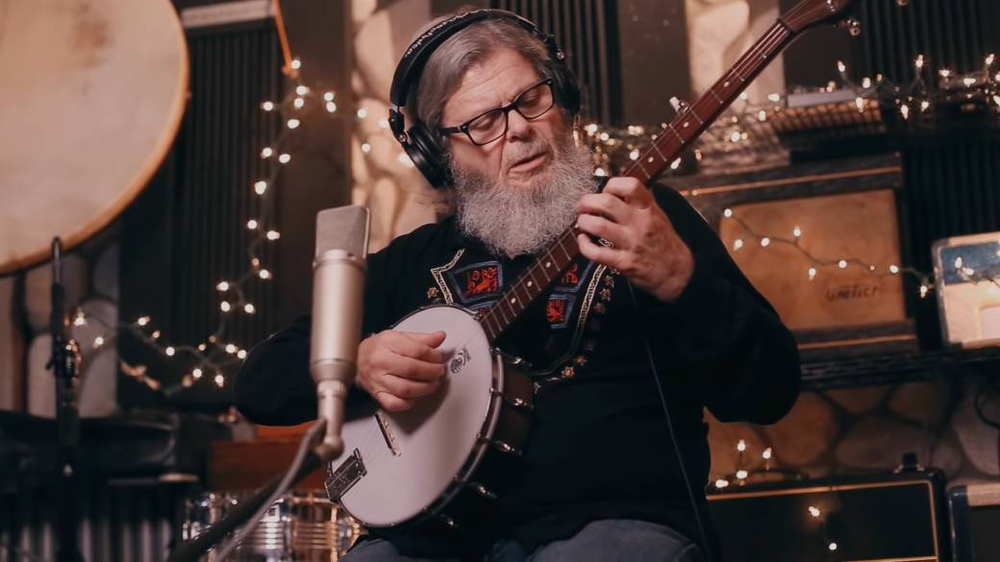

Gustavo Alfredo Santaolalla es un compositor, músico y productor musical argentino ganador en dos ocasiones consecutivas del Premio Óscar a la mejor banda sonora original en 2005 y 2006 por las películas Brokeback Mountain y Babel respectivamente.
creador de gran parte de la banda sonora del videojuego
